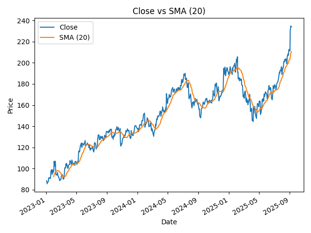
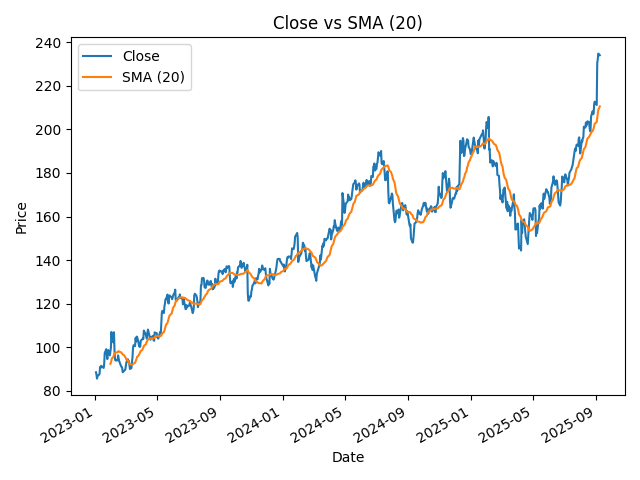

Data Visualization
Exploring Data Through Visual Stories
The Visualization
 

What This Visualization Shows
The Data
Describe the dataset you visualized:
- Source: Where did the data come from? (e.g., course project, research, public dataset)
- Time Period: When was this data collected?
- Sample Size: How many data points or observations?
- Variables: What variables are being visualized?
Key Insights
Explain what the visualization reveals:
- Main Finding 1: [Describe what stands out]
- Main Finding 2: [Another important pattern or trend]
- Surprising Discovery: [Something unexpected you noticed]
“Data visualization is not just about making pretty charts—it’s about revealing truth hidden in numbers.”
The Story Behind This Work
Context
Explain when and why you created this visualization:
- What course or project was this for?
- What was the assignment or goal?
- When did you create this? (which semester/year)
The Challenge
What problem were you trying to solve with this visualization?
- What question were you trying to answer?
- Who was the intended audience?
- What message did you want to convey?
Design Choices
Why This Type of Chart?
Explain your choice of visualization type (bar chart, line graph, scatter plot, etc.):
I chose [chart type] because:
- Reason 1
- Reason 2
- It best represents [what aspect of the data]
Color and Style
Discuss your aesthetic decisions:
- Color Palette: Why did you choose these colors?
- Layout: Why this particular arrangement?
- Labels and Annotations: What did you emphasize and why?
Alternative Approaches Considered
What other visualization types did you consider? Why didn’t you use them?
Tools & Techniques
Software Used
- Primary Tool: [e.g., R with ggplot2, Python with matplotlib, Tableau, Excel]
- Additional Libraries: [Any specific packages or tools]
Technical Challenges
What difficulties did you face while creating this?
- Challenge 1: [Description and solution]
- Challenge 2: [Description and solution]
What I Learned
Technical Skills
- Skill 1: [e.g., Data cleaning and preparation]
- Skill 2: [e.g., Choosing appropriate chart types]
- Skill 3: [e.g., Color theory for data visualization]
Conceptual Understanding
Reflect on what this project taught you about:
- The importance of data visualization
- How to communicate insights effectively
- The relationship between data and storytelling
If I Could Redo This…
Looking back, what would you do differently?
- Improvement 1
- Improvement 2
- Additional analysis you would include
Conclusion
Summarize the value of this visualization work. What was the most important takeaway from this experience?
Created: [Month Year] | Course: [Course Name/Code] | Tool: Software Used